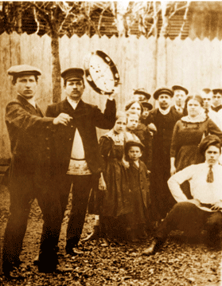

Chapter 5
Small Crime and Punishment

A village holiday, Bogorodskii county, Moscow Province.
From the collection of Mikhail Zolotarev.
Township courts were empowered to render verdicts on 84 misdemeanors defined by statute law and to sentence convicted defendants to modest fines and short terms of arrest. This chapter addresses the types of criminal charges that were brought by peasants, the role of local police in these proceedings, the kinds of responses judges made to petty crime, and the standards of behavior enforced through these courts. The charts and tables on the site present data on the variations in kinds of criminal cases brought at different township courts; the overall numbers of misdemeanor cases heard in Moscow Province at township courts from 1905 through 1914; the objects mentioned in theft cases (these provide a glimpse of rural life from a thief's perspective); and conviction rates for various types of cases. I defined three major categories of misdemeanor cases--personal dignity, public welfare, and property rights–according to the descriptions of misdemeanors in the legal code applied at the township courts in the years of my survey.
Documents
© 2004 Jane Burbank, New York University
with permission from Indiana University Press
{kind=link}
{kind=link}